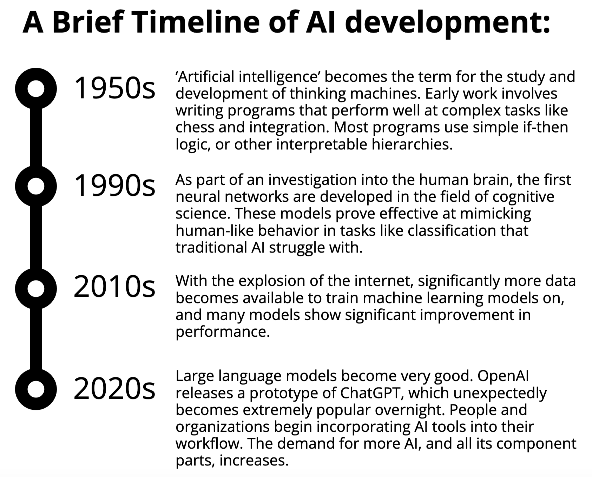
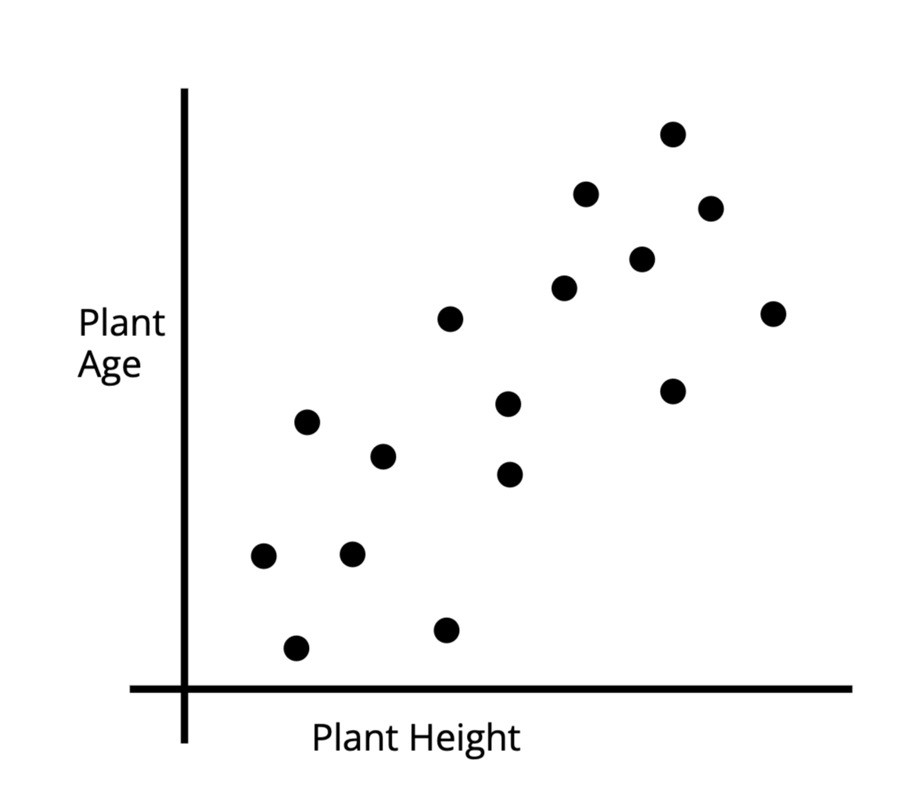
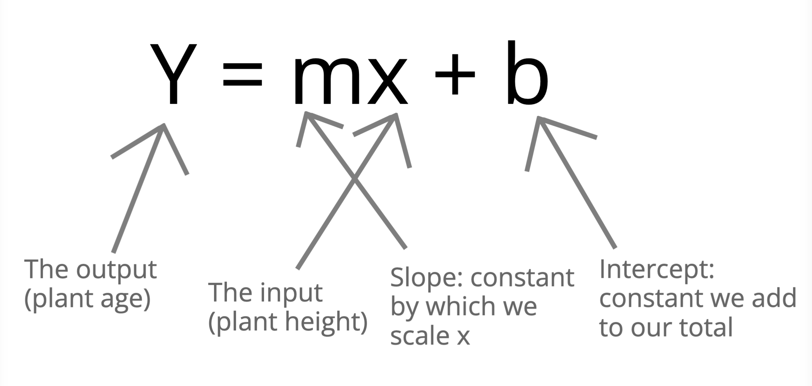
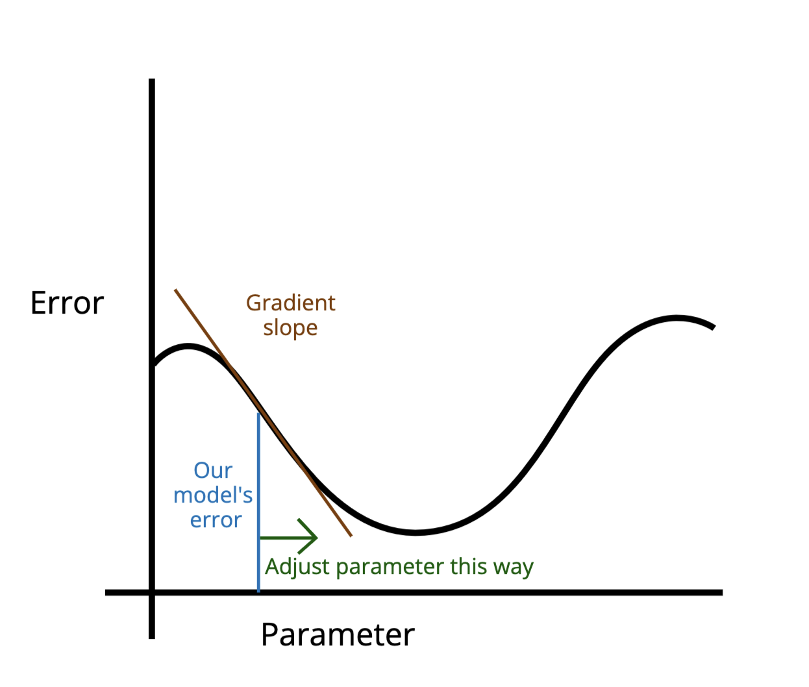
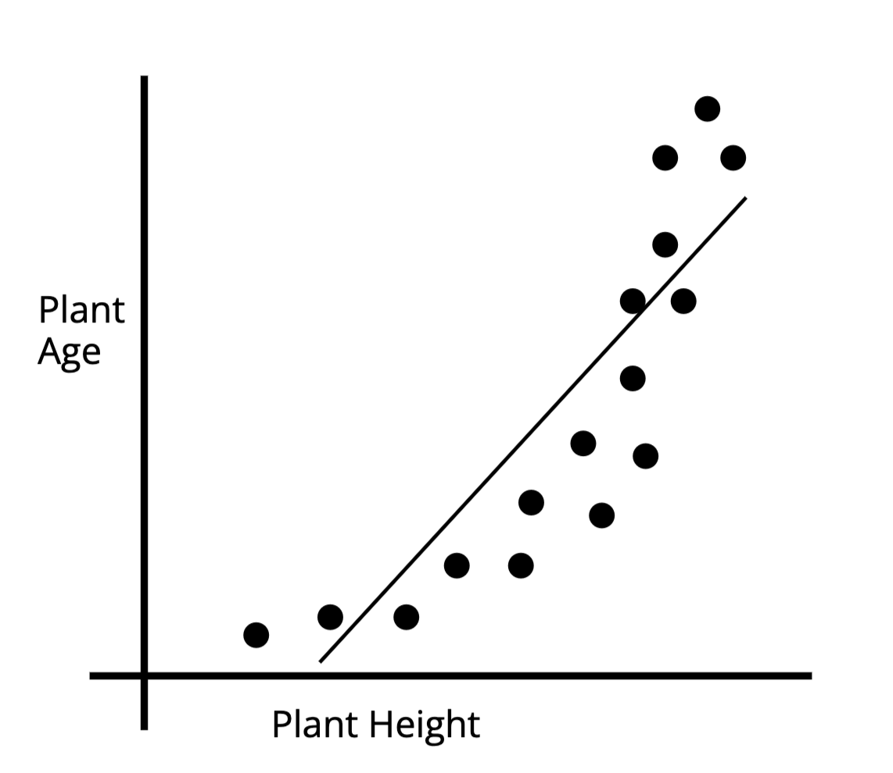
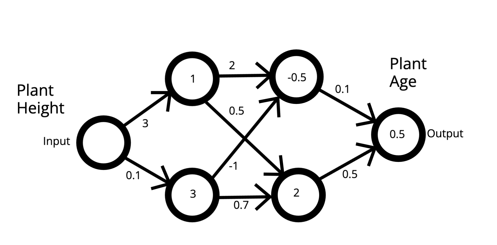
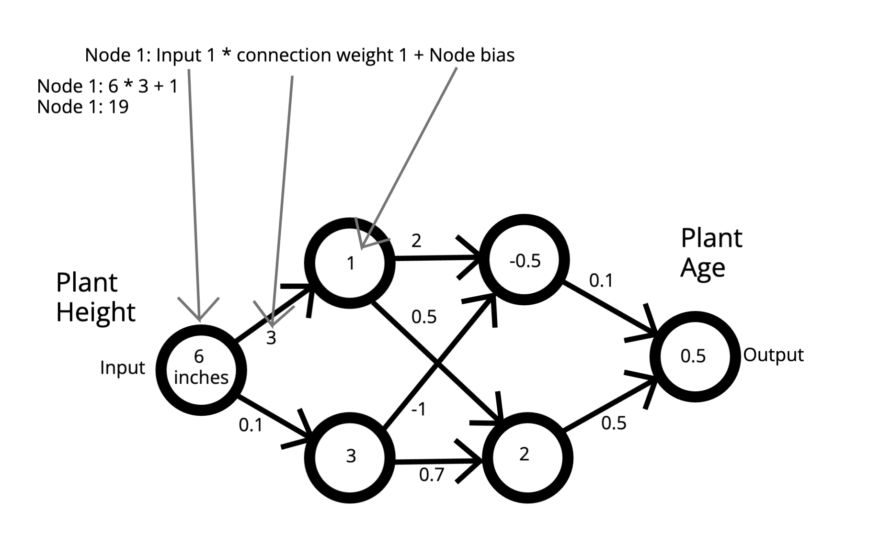
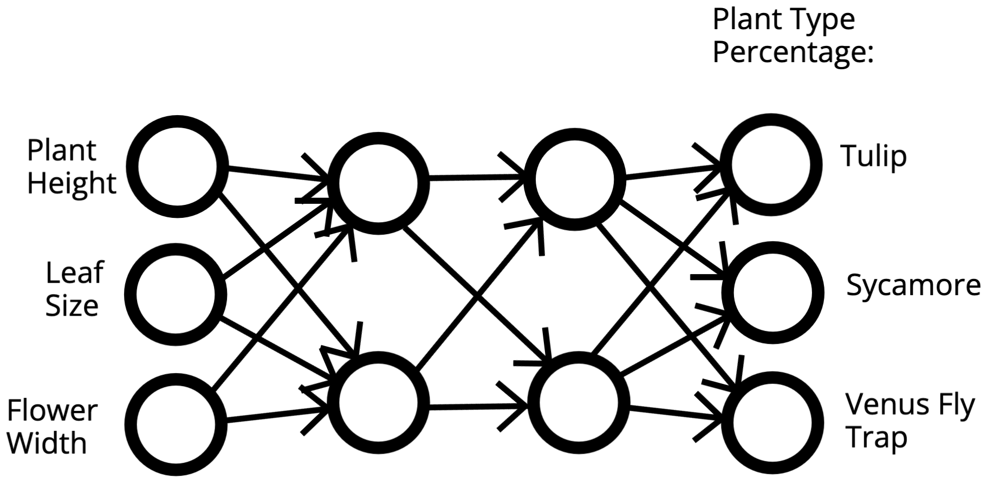

Crash Course: How Does AI Work?
What is AI?
While ‘artificial intelligence’ is used inconsistently and very hard to define, in the past several years, the most recent boom in AI has surrounded particular types of machine learning models, especially Large Language Models (LLMs).

You can read more about the history of artificial intelligence here:
https://st.llnl.gov/news/look-back/birth-artificial-intelligence-ai-research
What is Machine Learning?
Machine learning is a sub-field of artificial intelligence studying how statistical models can learn patterns from data, and generalize those patterns to new data. This section explains the basics of how some simple machine learning processes work.
A simple machine learning algorithm might try to find a rule to predict the average age of a certain type of plant given its height. For this example, we’ll assume these have a linear relationship.

You probably recognize this equation describing linear functions:

To find the best linear equation to fit our data, we want to find what values of m and b give us the most accurate predicted age (y) for each input height (x). In this example, m and be are our parameters.
So how do machine learning algorithms actually figure out optimal parameters from a dataset? Most machine learning algorithms learn through gradient descent. Gradient descent usually follows these (simplified) steps:
- Set parameters m and b to random values.
- Using our model, calculate the predicted plant age for an input plant height.
- Compare predicted age to the actual known age to get the ‘error’, or ‘risk’.
- Based on the size and direction of the error, adjust our parameters m and b closer to their optimal value by a small amount.
Ideally, by the end of gradient descent, we will reach the parameter values at the minimum point on this graph, where error is minimized.

In practice, gradient descent is much more complicated and precise, working simultaneously with many input variables, many parameters, algorithms determining exactly how much to adjust parameters, and rules deciding when to stop. But this is, in principle, how most machine learning algorithms are trained.
This example used a single-variable linear model. A multi-variable linear model might try to predict height by using height, color, and leaf size. And of course, not all relationships are linear. Sometimes other kinds of equations might be better suited to describe the relationships between data. For instance, the data below is clearly not well-described by a linear best fit line.

Similarly, not all outputs are numerical. For example, we might want to use these features to predict plant type instead of plant age. When we are trying to predict a numerical value this is called regression, and when we are trying to predict a categorical value, this is called classification.
What is a Neural Network?
A neural network is a type of machine learning model consisting of interconnected units called ‘neurons’ or ‘nodes’.
Here’s an example of a simple neural network using our plant example:

Inputs travel through each of the connections and are transformed by model parameters in each connection and node. For each node, the multiplied input and parameter of each arrow are added together. Then the ‘bias’ term inside the node is added at the end, and the node’s calculated value is used as an input to the next layer. This calculation is performed for each node at each layer, until the output is calculated.

Neural networks are trained using gradient descent through a process called backpropagation, where model parameters in the network are updated backwards from the outputs, using the chain rule to update them precisely.
You may see the word ‘weight’ used interchangeably with parameter: they have very similar meanings, but weight is specifically the type of parameter describing connections between nodes.
Neural networks can have many inputs, and be used for regression and classification. The example below shows a classification net with multiple inputs.

Neural networks can have hundreds of layers, hundreds of nodes per layer, and many different types of layers suited to different tasks.
Neural networks can be trained flexibly to perform tasks that other models with precisely defined relationships (such as linear classifiers) fail at. However, neural networks are far less interpretable. While we can easily look at the final parameters of our linear classifier and see what inputs are weighted the most strongly, it can be much harder to do this with neural networks. This makes them black box models, where it’s unclear why a model makes decisions the way it does, even though those decisions might be very accurate.
If you want to learn more about machine learning and neural networks, the youtube channel 3blue1brown has a lot of videos on the subject, at different levels of complexity:
https://www.youtube.com/channel/UCYO_jab_esuFRV4b17AJtAw
How do Large Language Models Work?
Large language models are machine learning models that have been trained to predict the next most likely word based on the words that have come before it. They have been trained on billions of sentences, and have gotten extremely accurate.
In particular, the use of transformers allows chatbots to flexibly incorporate context into their responses. Transformers collapse the words from earlier in the conversation into a “context vector” that can be fed as an input into the chatbot’s prediction of the next word. This is how chatbots appear to ‘remember’ previous exchanges.
If you want to learn more about transformers, this is a great article going over the architecture of LLMs in more detail:
https://mark-riedl.medium.com/a-very-gentle-introduction-to-large-language-models-without-the-hype-5f67941fa59e